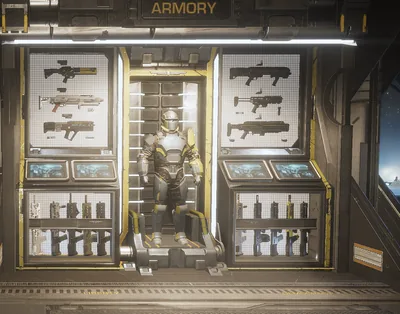

军械库

The 军械库
军械库 是 章节 of the 超级驱逐舰 used to set 装备 loadouts.
地点
The 军械库 is located between the 爱国行政中心 and the Bridge.
Tabs
- 武器库
Arm yourself with a 主武器, 次要，以及 投掷物 weapon. - 军械库
Dress in 护甲 that suits your 当前 needs, and a 头盔 和 cape to match. - 角色
Personalize your 绝地潜兵. Pick a body 类型, voice, and 标题 for them. Select a player card, decide a victory pose, and enable them to do up to four emotes. - 强化资源
View your unlocked boosters. - 生涯
Check your own 属性.
琐事
FS-23 Battle Master is the 护甲 displayed on the mannequin.
变更历史
补丁
描述
1.003.101
2025-06-10
🔧修复
Miscellaneous Fixes
- Fixed jitter while interacting with the 军械库.
1.003.000
2025-05-15
(Mid-补丁)
Lower 武器 now 显示 various 配件 and patterns.